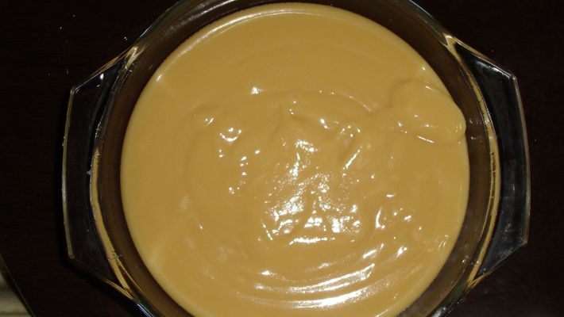

comidas da vovo

ingredientes
- 2 litros de leite
- 4 xícaras de açúcar
modo de preparo
- Coloque o leite e o açúcar em uma panela grande de fundo largo.
- Leve ao fogo médio, mexendo sempre com uma colher de pau, até obter fervura (cerca de 15 minutos).
- Diminua o fogo e continue mexendo até obter um doce marrom claro de consistência cremosa (cerca de 45 minutos).
- Passe o doce para um refratário, deixe esfriar bem e sirva colheradas em pratos de sobremesa com fatias de queijo branco.
audio da receita